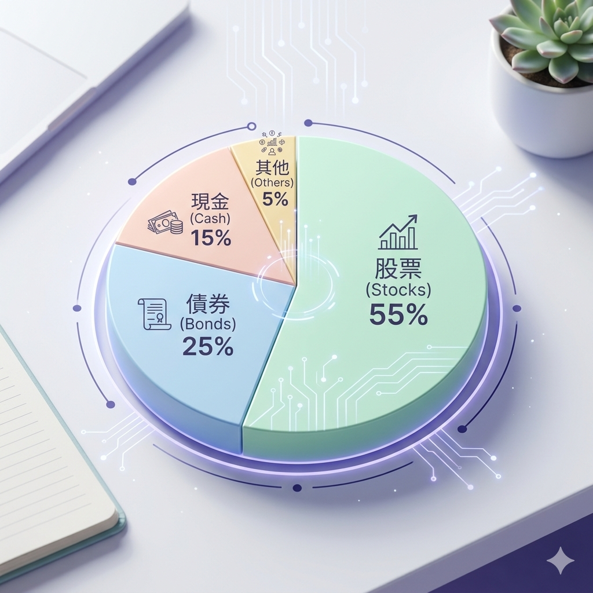
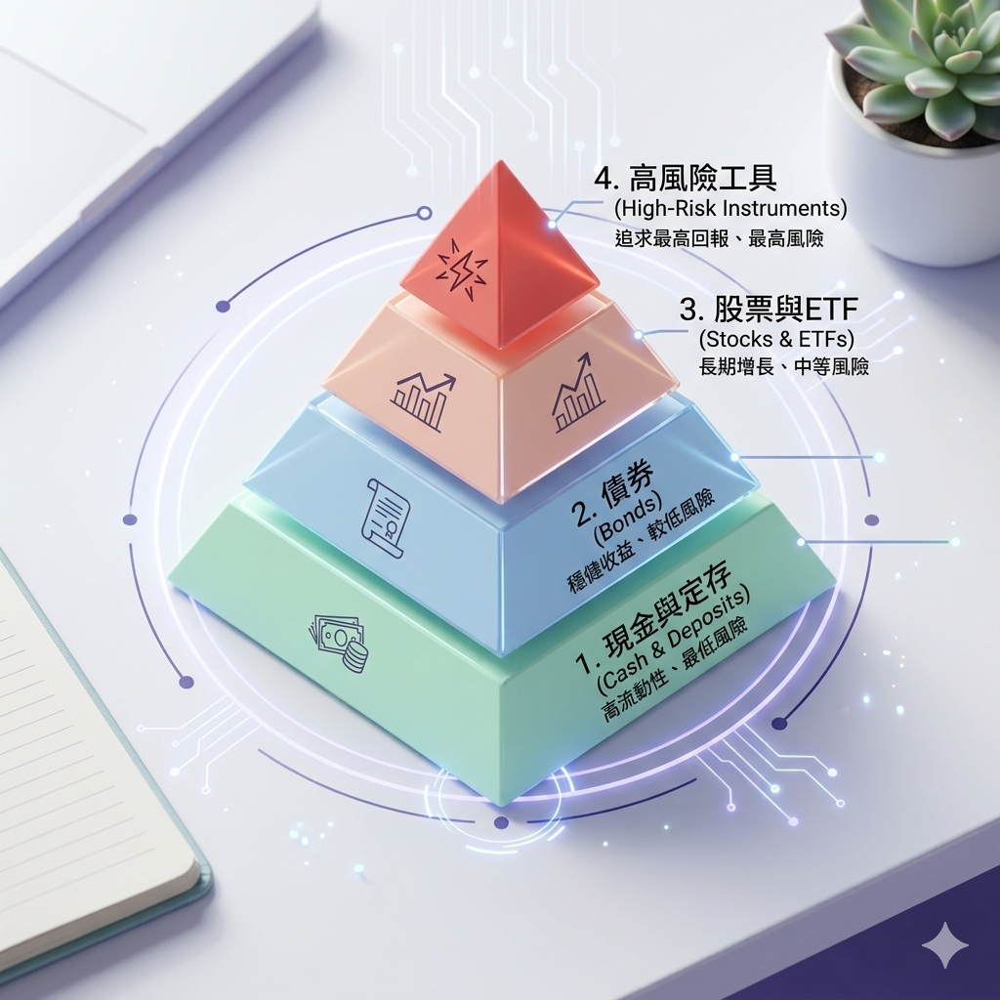

上一篇我們談了記帳、搞懂收支，存下第一桶金。這一篇要接著往下走。很多人一想到投資，腦中浮現的就是「要買哪支股票」「現在能不能進場」。但如果把投資比喻成蓋房子，選股頂多是挑窗簾的顏色——真正決定房子穩不穩的，是地基。而投資的地基，就是這篇要談的兩件事：資產配置與風險管理。
先把觀念打穩，後面學工具、學分析才不會蓋在流沙上。
什麼是資產配置
資產配置聽起來很專業，其實白話講就是一句話：你的錢，要分成幾份、分別放到哪些地方。
常見的資產類別有幾種：
- 現金與約當現金：活存、定存、貨幣基金。安全、隨時能動用，但幾乎不成長。
- 債券：借錢給政府或企業，收利息。相對穩，波動比股票小。
- 股票與 ETF：當公司的股東，分享成長。長期報酬高，但波動也大。
- 其他：房地產、黃金、外幣等。
資產配置的重點不是「哪一種最好」，而是怎麼搭配。因為不同資產在不同時候表現不一樣——股市跌的時候，債券或現金可能撐住你的資產，這就是搭配的價值。

為什麼「分散」這麼重要
有句老話：別把雞蛋放在同一個籃子裡。理由很直覺——如果你全部身家都押在一支股票，它出事你就全毀；但如果分散在多種資產，某一項跌了，還有其他項頂著。
分散有兩個層次：
- 跨資產分散：股票、債券、現金都有，不全壓在單一類別。
- 同類內分散：就算都買股票，也別只買一家公司或一個產業。
分散不會讓你「賺最多」，但會讓你輸的時候不會輸到出局。而投資能不能長久，關鍵往往不是賺多快，而是能不能活得夠久、留在場上。
風險管理：先想會賠多少，再想能賺多少
新手常犯的錯，是只看「這能賺多少」，卻沒想過「這會賠多少、我承受得起嗎」。成熟的投資者順序是反過來的——先評估風險，再談報酬。
風險管理有幾個實用觀念：
- 只用「賠得起」的錢投資：投資的錢，不該是你半年內要用的生活費或急用金。
- 先準備緊急預備金：手邊留 3～6 個月的生活費，才不會在市場低點被迫賣股救急。
- 認識自己的風險承受度：看到帳面虧損 20% 會睡不著，就代表你的配置太激進了。

上面這個風險金字塔是個好用的心智模型：底部是穩的（現金、定存），越往上風險越高（債券 → 股票／ETF → 高槓桿工具）。地基要穩，越上層的比例要越克制。多數人適合把大部分資產放在中下層，只用小部分去嘗試高風險工具。
報酬與風險，永遠是一組的
一個必須刻進腦子的原則：高報酬一定伴隨高風險，沒有例外。任何跟你說「穩賺不賠、高報酬零風險」的，幾乎都是話術或詐騙。
| 資產類別 | 風險 | 長期報酬 | 特性 |
|---|---|---|---|
| 現金／定存 | 低 | 低 | 穩定、對抗不了通膨 |
| 債券 | 中低 | 中低 | 領息、波動較小 |
| 股票／ETF | 中高 | 中高 | 長期成長、短期波動大 |
| 槓桿工具 | 高 | 高／可能大賠 | 放大獲利也放大虧損 |
理解這張表，你就會明白：投資不是找「最高報酬」，而是找適合自己風險承受度的那個平衡點。
給新手的一個起步框架
如果你完全不知道怎麼開始，可以先照這個順序想：
- 先存好緊急預備金（3～6 個月生活費，放活存）。
- 決定投入比例：只用閒錢，先從小額開始。
- 簡單配置：新手可以從「一檔大盤型 ETF ＋ 一部分現金」這種極簡組合起步，先熟悉市場的感覺。
- 定期檢視、慢慢調整：隨著經驗和資金增加，再逐步優化配置。
投資是一場馬拉松，不是百米衝刺。地基打穩，你才有本錢跑得久。這系列接下來會一步步帶你認識各種工具與分析方法，但請記得——再厲害的招式，都建立在穩固的配置與風險意識之上。
系列導覽
- 📚 回到 投資理財修煉 全系列目錄
- ⬅️ 上一篇：理財第一步：先搞懂錢跑去哪了
- ➡️ 下一篇：投資心態：長期 vs 短期、耐心 vs 貪婪
本文為個人學習記錄與知識整理，非投資建議。投資有風險，請依自身情況獨立判斷 🐾